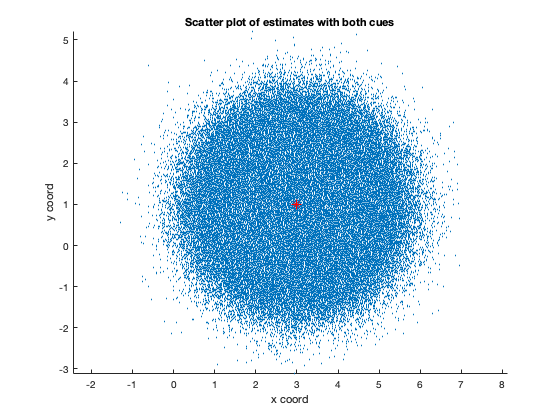

Contents
clear; close all; clc;
This problem extends problem 1 to a 2-dimensional case. The target is a circle of radius = 1. There are two cues both of which are bivariate Gaussians with different variances. Since these are unbiased cues, their mean estimates are the actual position of the target center. The task here is to construct bivariate Gaussians for cue1 (using Gaussians X1 and Y1) and for cue2 (using Gaussians X2 and Y2). Given that X1 and Y1 are independent and the same is the case for X2 and Y2, the bivariate Gaussian samples can be simply obtained by drawing samples from each 1-D Gaussian independently. The sampling 1-D Gaussians can be done using randn function of MATLAB. randn functions draws samples from a 1-D Gaussian of standard deviation = 1 and mean = 0. The standard deviation of the Gaussian can be changed by multiplying the output sample by the standard deviation of choice. Additionally, the mean can be incorporated by translating the output by the desired mean.
target_radius = 1; % radius of the target x_center = randi(10); % The x-coordinate of the center of the target y_center = randi(10); % The y-coordinate of the center of the target var1 = 1; % variance of both Gaussians for cue1 var2 = 4; % variance of both Gaussians for cue2 trials = 1e6; % Number of trials to be run for the Monte Carlo simulation % Drawing samples from Gaussians X1 = x_center + sqrt(var1) .* randn(trials, 1); X2 = x_center + sqrt(var2) .* randn(trials, 1); Y1 = y_center + sqrt(var1) .* randn(trials, 1); Y2 = y_center + sqrt(var2) .* randn(trials, 1);
a)
If Michael uses only cue 1, then the samples drawn from the Gaussian X1 and Y1 are the x and y coordinates of the estimates of the center of the target. The estimate is correct if it lies inside the circle of radius 1 around the center. The radial distance of each estimate from the center can be computed using the Euclidean distance formula:
And the estimate is correct if this radial distance is less than or equal to the radius of the circle which is 1.
The probability of correct estimate can then be computed as the ratio of the count of the correct estimates by the total number of trials.
figure(); scatter(X1, Y1, 1) hold on; plot(x_center, y_center, 'r*') xlabel('x coord') ylabel('y coord') title('Scatter plot of estimates with only cue_1') axis equal radial_distance = sqrt((X1 - x_center).^2 + (Y1 - y_center).^2); count_correct = sum(radial_distance <= target_radius); prob_correct = count_correct/trials
prob_correct =
0.3936
b)
If instead, Michael were to use both the cues, then he combines X1, X2 and Y1, Y2 to compute the estimate X, Y. The weighting used to compute X is:
Similarly, the weighting used to compute Y is:
Assuming that Michael is making an optimal choice, then the goal would be to minimize the variance of the estimates X and Y. From Q1, we know that when the variances are minimized, the weights are given by:
Similarly,
These weights can then be used to compute the X and Y estimates of the center.
Following the procedure in (a), the correct estimates can then be computed by checking if the radial estimate of each of these estimates from the center of the target circle is within radius of 1. The probability correct is then the ratio of the count of the correct estimates and the total number of trials.
w = var2/(var1 + var2); v = var2/(var1 + var2); X = w * X1 + (1 - w) * X2; Y = v .* Y1 + (1 - v) .* Y2; figure(); scatter(X, Y, 1) hold on; plot(x_center, y_center, 'r*') xlabel('x coord') ylabel('y coord') title('Scatter plot of estimates with both cues') axis equal radial_distance = sqrt((X - x_center).^2 + (Y - y_center).^2); count_correct = sum(radial_distance <= target_radius); prob_correct = count_correct/trials
prob_correct =
0.4656
 From the simulation, we see that weighing the two cues optimally would increase the probability of Michael hitting the target correctly.